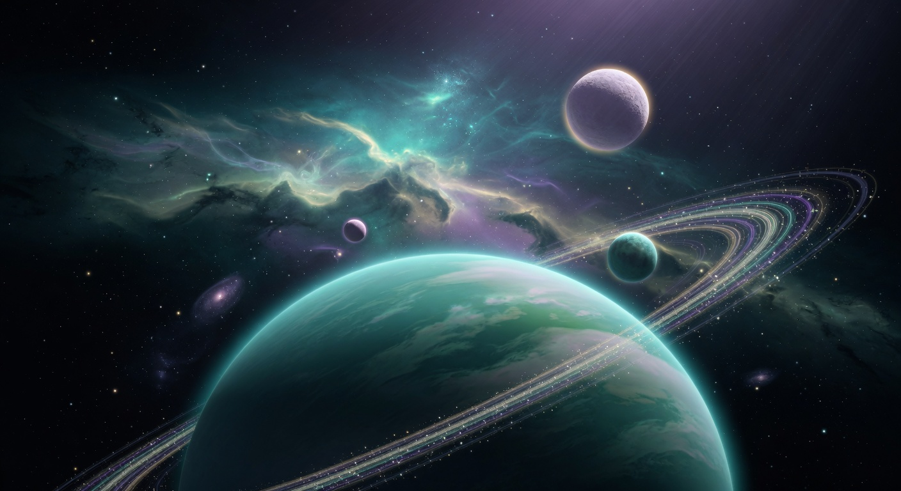

The Journeys
Explore the Cosmos

COSMOLOGY • CYCLIC TIME
4 min
The Breathing Cosmos
Modern cosmology flirts with cyclic universes and the Big Bounce. The Vedas and Puranas described the cosmos as the rhythmic breath of creation — expanding, dissolving, and arising again.
Begin the journey

BLACK HOLES • TIME
4 min
At the Edge of Forever
Fall toward a black hole and watch the entire future of the universe flash before your eyes. Ancient traditions described the final dissolution of form and the end of time itself.
Begin the journey

EXOPLANETS • MULTIPLICITY
3 min
Worlds Without Number
Thousands of exoplanets confirmed, many potentially habitable. The Puranas spoke of countless Brahmandas — entire universes teeming with life and possibility.
Begin the journey

ANCIENT ASTRONOMY • PRECISION
4 min
The Rishis Who Measured the Stars
Modern science gave us the size of the universe. Centuries earlier, Vedic astronomers calculated planetary distances, the circumference of the Earth, and even hints of the speed of light with remarkable accuracy.
Begin the journey